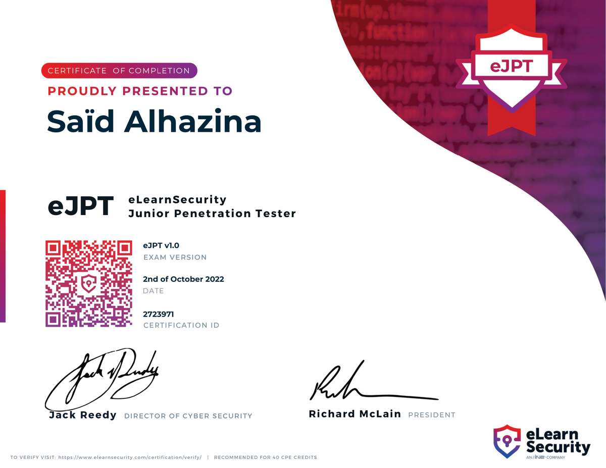
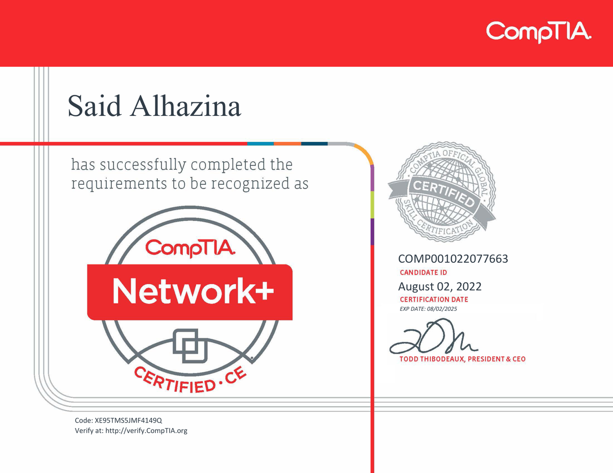
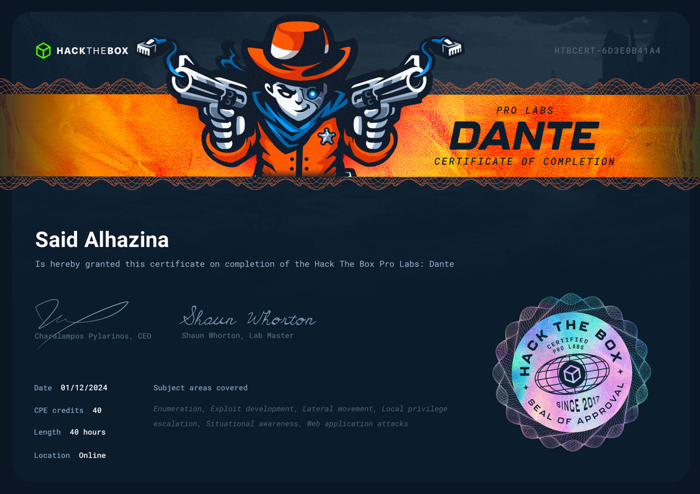

<title>Said Alhazina Portfolio</title>
<meta name="description" content="Three clickable design directions for an offensive-security portfolio and writeup blog.">
<link rel="preconnect" href="https://fonts.googleapis.com">
<link rel="preconnect" href="https://fonts.gstatic.com" crossorigin>
<link rel="stylesheet" href="https://fonts.googleapis.com/css2?family=Archivo:wght@500;600;700&family=Fraunces:opsz,wght@9..144,500;9..144,600;9..144,700&family=IBM+Plex+Sans:wght@400;500;600;700&family=JetBrains+Mono:wght@400;500;700&family=Public+Sans:wght@400;500;600;700&display=swap">
<style>
/* =========================================================================
   LAYOUT CONCEPT
   One shared markup set for 3 pages (Home / Writeups / Article), re-skinned
   live by 3 design directions driven entirely off CSS custom properties.
   Direction B "Fieldcraft" is the default (recommended). A thin meta "proto
   bar" is the only demo chrome; everything below it is the real design.
   ========================================================================= */

/* ---- CHOSEN · Serious technical publication (Offensys-calm), default, light ---- */
:root{
  --font-display:"Archivo",system-ui,-apple-system,sans-serif;
  --font-body:"IBM Plex Sans",system-ui,-apple-system,sans-serif;
  --font-mono:"JetBrains Mono",ui-monospace,SFMono-Regular,Menlo,monospace;
  --radius:6px; --hair:1px;
  --bg:#FAFAFB; --surface:#FFFFFF; --surface-2:#F0F1F4;
  --fg:#1A1D23; --muted:#5E6672; --border:#E2E5EA; --faint:#EDEFF2;
  --accent:#A32E25; --accent-weak:#F3E5E3; --accent-fg:#FFFFFF;
  --code-bg:#14171D; --code-fg:#E6EDF3; --code-border:#262B33; --code-mut:#8B98A8;
  --good:#2F7D55; --warn:#B07818; --crit:#A32E25;
  --shadow:0 1px 2px rgba(20,22,27,.04),0 10px 30px rgba(20,22,27,.07);
  color-scheme:light;
}
@media (prefers-color-scheme:dark){:root:not([data-theme="light"]){
  --bg:#14161B; --surface:#1B1E24; --surface-2:#23272E;
  --fg:#E7EAEF; --muted:#99A1AD; --border:#2C313A; --faint:#23262D;
  --accent:#E06A5C; --accent-weak:#2E211F; --accent-fg:#14161A;
  --shadow:0 1px 2px rgba(0,0,0,.3),0 10px 30px rgba(0,0,0,.35);
  color-scheme:dark;
}}
:root[data-theme="dark"]{
  --bg:#14161B; --surface:#1B1E24; --surface-2:#23272E;
  --fg:#E7EAEF; --muted:#99A1AD; --border:#2C313A; --faint:#23262D;
  --accent:#E06A5C; --accent-weak:#2E211F; --accent-fg:#14161A;
  --shadow:0 1px 2px rgba(0,0,0,.3),0 10px 30px rgba(0,0,0,.35);
  color-scheme:dark;
}

/* ---- DIRECTION A · Blacksite (operator / terminal), dark-first ---- */
:root[data-dir="blacksite"]{
  --font-display:"JetBrains Mono",ui-monospace,monospace;
  --font-body:"IBM Plex Sans",system-ui,sans-serif;
  --font-mono:"JetBrains Mono",ui-monospace,monospace;
  --radius:2px;
  --bg:#0A0D0F; --surface:#0F1417; --surface-2:#141B1F;
  --fg:#CBD5D8; --muted:#6E7A81; --border:#1E2A2F; --faint:#16211F;
  --accent:#49CDB6; --accent-weak:#0E2420; --accent-fg:#04110E;
  --code-bg:#0C1114; --code-fg:#CFE9E2; --code-border:#1A2A2D; --code-mut:#5E7A74;
  --good:#49CDB6; --warn:#D9A54B; --crit:#E86A5C;
  --shadow:0 0 0 1px rgba(73,205,182,.04),0 12px 34px rgba(0,0,0,.5);
  color-scheme:dark;
}
@media (prefers-color-scheme:light){:root[data-dir="blacksite"]:not([data-theme="dark"]){
  --bg:#E8ECEB; --surface:#FFFFFF; --surface-2:#EDF2F0;
  --fg:#0E211C; --muted:#4C615A; --border:#C9D7D2; --faint:#DCE6E2;
  --accent:#0C8E76; --accent-weak:#DCEFE9; --accent-fg:#FFFFFF;
  --shadow:0 1px 2px rgba(0,0,0,.05),0 10px 26px rgba(10,30,24,.08);
  color-scheme:light;
}}
:root[data-dir="blacksite"][data-theme="light"]{
  --bg:#E8ECEB; --surface:#FFFFFF; --surface-2:#EDF2F0;
  --fg:#0E211C; --muted:#4C615A; --border:#C9D7D2; --faint:#DCE6E2;
  --accent:#0C8E76; --accent-weak:#DCEFE9; --accent-fg:#FFFFFF;
  --shadow:0 1px 2px rgba(0,0,0,.05),0 10px 26px rgba(10,30,24,.08);
  color-scheme:light;
}

/* ---- DIRECTION B · Fieldcraft (serif + red), comparison, light ---- */
:root[data-dir="fieldcraft"]{
  --font-display:"Fraunces",Georgia,"Times New Roman",serif;
  --font-body:"Public Sans",system-ui,-apple-system,sans-serif;
  --font-mono:"JetBrains Mono",ui-monospace,SFMono-Regular,Menlo,monospace;
  --radius:5px;
  --bg:#F6F7F9; --surface:#FFFFFF; --surface-2:#EEF1F4;
  --fg:#16181D; --muted:#5A616B; --border:#D9DEE4; --faint:#E8EBEF;
  --accent:#B23A2E; --accent-weak:#F2E2DF; --accent-fg:#FFFFFF;
  --shadow:0 1px 2px rgba(16,18,24,.04),0 8px 24px rgba(16,18,24,.06);
  color-scheme:light;
}
@media (prefers-color-scheme:dark){:root[data-dir="fieldcraft"]:not([data-theme="light"]){
  --bg:#111318; --surface:#181B21; --surface-2:#1F232A;
  --fg:#E6E9ED; --muted:#9AA2AC; --border:#2A2F37; --faint:#222730;
  --accent:#E3594B; --accent-weak:#2C211F; --accent-fg:#14161A;
  --shadow:0 1px 2px rgba(0,0,0,.3),0 10px 30px rgba(0,0,0,.35);
  color-scheme:dark;
}}
:root[data-dir="fieldcraft"][data-theme="dark"]{
  --bg:#111318; --surface:#181B21; --surface-2:#1F232A;
  --fg:#E6E9ED; --muted:#9AA2AC; --border:#2A2F37; --faint:#222730;
  --accent:#E3594B; --accent-weak:#2C211F; --accent-fg:#14161A;
  --shadow:0 1px 2px rgba(0,0,0,.3),0 10px 30px rgba(0,0,0,.35);
  color-scheme:dark;
}

*{box-sizing:border-box}
body{background:var(--bg);color:var(--fg);font-family:var(--font-body);
  font-size:16px;line-height:1.65;-webkit-font-smoothing:antialiased;
  transition:background .25s ease,color .25s ease}
::selection{background:var(--accent);color:var(--accent-fg)}
a{color:inherit}
h1,h2,h3,h4{font-family:var(--font-display);text-wrap:balance;line-height:1.12;margin:0}
p{margin:0}
img{max-width:100%}
:focus-visible{outline:2px solid var(--accent);outline-offset:2px;border-radius:2px}
@media (prefers-reduced-motion:reduce){*{transition:none!important;animation:none!important}}

/* ---------- META PROTO BAR (the only demo chrome) ---------- */
.proto{position:sticky;top:env(safe-area-inset-top,0px);z-index:50;
  background:var(--surface);border-bottom:var(--hair) solid var(--border);
  box-shadow:0 1px 0 var(--faint)}
.proto-in{max-width:1180px;margin:0 auto;padding:8px 16px;
  display:flex;flex-wrap:wrap;align-items:center;gap:10px 18px}
.proto .tag{font-family:var(--font-mono);font-size:10px;letter-spacing:.14em;
  text-transform:uppercase;color:var(--muted);display:flex;align-items:center;gap:7px}
.proto .tag b{color:var(--accent);font-weight:700}
.proto .grp{display:flex;align-items:center;gap:6px;flex-wrap:wrap}
.proto .lbl{font-family:var(--font-mono);font-size:10px;letter-spacing:.1em;
  text-transform:uppercase;color:var(--muted)}
.seg{display:inline-flex;border:var(--hair) solid var(--border);border-radius:999px;
  overflow:hidden;background:var(--surface-2)}
.seg button{font-family:var(--font-mono);font-size:11px;letter-spacing:.03em;
  border:0;background:transparent;color:var(--muted);padding:5px 11px;cursor:pointer;
  transition:background .15s,color .15s}
.seg button[aria-pressed="true"]{background:var(--accent);color:var(--accent-fg);font-weight:700}
.icon-btn{font-family:var(--font-mono);font-size:12px;border:var(--hair) solid var(--border);
  background:var(--surface-2);color:var(--fg);border-radius:999px;width:34px;height:28px;
  cursor:pointer;display:inline-grid;place-items:center}
.proto .spacer{flex:1 1 40px}

/* ---------- FLOATING PILL TOP NAV ---------- */
.topnav-wrap{display:flex;justify-content:center;padding:0 16px;position:sticky;
  top:calc(env(safe-area-inset-top,0px) + 12px);z-index:60}
.topnav{display:flex;align-items:center;gap:2px;padding:6px 8px;max-width:100%;
  background:color-mix(in srgb,var(--surface) 88%,transparent);
  backdrop-filter:blur(12px);-webkit-backdrop-filter:blur(12px);
  border:var(--hair) solid var(--border);border-radius:999px;box-shadow:var(--shadow)}
.topnav a{font-size:13.5px;color:var(--muted);text-decoration:none;padding:7px 13px;border-radius:999px;
  cursor:pointer;white-space:nowrap;transition:color .15s,background .15s}
.topnav a:hover{color:var(--fg)}
.topnav a.active{color:var(--accent);background:var(--accent-weak)}
.tn-divider{width:1px;height:20px;background:var(--border);margin:0 6px;flex:none}
.tn-lang{display:inline-flex;border:var(--hair) solid var(--border);border-radius:999px;overflow:hidden;background:var(--surface-2)}
.tn-lang button{font-family:var(--font-mono);font-size:11px;border:0;background:transparent;color:var(--muted);padding:5px 9px;cursor:pointer;transition:background .15s,color .15s}
.tn-lang button.active{background:var(--accent);color:var(--accent-fg);font-weight:700}
.tn-theme{width:32px;height:32px;border-radius:50%;border:0;background:transparent;color:var(--muted);
  cursor:pointer;display:grid;place-items:center;flex:none}
.tn-theme svg{width:17px;height:17px}
.tn-theme:hover{color:var(--accent);background:var(--surface-2)}
@media (max-width:640px){
  .topnav-wrap{padding:0 10px;top:calc(env(safe-area-inset-top,0px) + 8px);justify-content:flex-start}
  .topnav{overflow-x:auto;max-width:100%;scrollbar-width:none;-ms-overflow-style:none;justify-content:flex-start}
  .topnav::-webkit-scrollbar{display:none}
}

/* ---------- SHARED SITE SHELL ---------- */
.wrap{max-width:1120px;margin:0 auto;padding-inline:20px}
.read{max-width:720px;margin:0 auto;padding-inline:20px}
.site-header{border-bottom:var(--hair) solid var(--border);background:var(--bg)}
.site-header .wrap{display:flex;align-items:center;justify-content:space-between;
  gap:14px;padding-block:16px}
.brand{display:flex;align-items:center;gap:11px;cursor:pointer;background:none;border:0;
  color:inherit;font:inherit;padding:0}
.brand .mark{width:34px;height:34px;border-radius:var(--radius);display:grid;place-items:center;
  background:var(--fg);color:var(--bg);font-family:var(--font-mono);font-weight:700;
  font-size:14px;letter-spacing:-.02em}
:root:not([data-dir="fieldcraft"]) .brand .mark{background:var(--accent);color:var(--accent-fg)}
:root[data-dir="blacksite"] .brand .mark{border-radius:2px;
  box-shadow:0 0 0 1px var(--border),0 0 18px -4px var(--accent)}
.brand .who{display:flex;flex-direction:column;line-height:1.1}
.brand .who b{font-family:var(--font-display);font-size:16px;font-weight:700}
.brand .who span{font-family:var(--font-mono);font-size:10.5px;letter-spacing:.06em;
  color:var(--muted);text-transform:uppercase}
.nav{display:flex;align-items:center;gap:4px}
.nav a{font-family:var(--font-body);font-size:14px;font-weight:500;letter-spacing:0;
  text-decoration:none;color:var(--muted);padding:7px 11px;border-radius:var(--radius);
  cursor:pointer;transition:color .15s,background .15s}
:root[data-dir="blacksite"] .nav a{font-family:var(--font-mono);font-size:12.5px;letter-spacing:.02em}
.nav a:hover{color:var(--fg);background:var(--surface-2)}
.nav a[data-current="true"]{color:var(--fg);background:var(--surface-2)}
:root:not([data-dir="fieldcraft"]) .nav a[data-current="true"]{color:var(--accent)}
.nav .cta{color:var(--accent-fg);background:var(--accent)}
.nav .cta:hover{color:var(--accent-fg);filter:brightness(1.05)}

/* eyebrow / labels */
.eyebrow{font-family:var(--font-mono);font-size:11px;letter-spacing:.18em;
  text-transform:uppercase;color:var(--accent);display:inline-flex;align-items:center;gap:8px}
:root[data-dir="blacksite"] .eyebrow::before{content:"▸ ";color:var(--accent)}
.rule{height:var(--hair);background:var(--border);border:0;margin:0}

/* page vis */
[data-page]{display:none}
[data-page].on{display:block;animation:fade .3s ease}
@keyframes fade{from{opacity:0;transform:translateY(4px)}to{opacity:1;transform:none}}

/* ---------- HERO (Home) ---------- */
.hero{padding-block:clamp(40px,8vw,84px)}
.hero .eyebrow{margin-bottom:20px}
.hero h1{font-size:clamp(34px,6.4vw,62px);font-weight:700;letter-spacing:-.02em}
:root:not([data-dir="fieldcraft"]) .hero h1{letter-spacing:-.02em}
:root[data-dir="blacksite"] .hero h1{letter-spacing:-.03em}
.hero .lead{font-size:clamp(17px,2.2vw,21px);color:var(--muted);max-width:60ch;
  margin-top:22px;line-height:1.55}
.hero .lead b{color:var(--fg);font-weight:600}
.hero-actions{display:flex;flex-wrap:wrap;gap:12px;margin-top:30px}
.btn{font-family:var(--font-mono);font-size:13px;letter-spacing:.02em;text-decoration:none;
  padding:11px 18px;border-radius:var(--radius);cursor:pointer;border:var(--hair) solid var(--border);
  background:var(--surface);color:var(--fg);display:inline-flex;align-items:center;gap:8px;
  transition:transform .12s,background .15s,border-color .15s}
.btn:hover{transform:translateY(-1px)}
.btn.primary{background:var(--accent);color:var(--accent-fg);border-color:transparent}
.btn .arr{transition:transform .15s}.btn:hover .arr{transform:translateX(3px)}

/* status ticker */
.status{display:flex;flex-wrap:wrap;gap:8px 22px;margin-top:34px;padding-top:22px;
  border-top:var(--hair) solid var(--border);font-family:var(--font-mono);font-size:12px}
.status .s{display:flex;align-items:center;gap:8px;color:var(--muted)}
.dot{width:7px;height:7px;border-radius:50%;background:var(--good);
  box-shadow:0 0 0 3px color-mix(in srgb,var(--good) 22%,transparent)}
.dot.b{background:var(--accent);box-shadow:0 0 0 3px color-mix(in srgb,var(--accent) 22%,transparent)}

/* proof grid */
.sec{padding-block:clamp(34px,6vw,64px)}
.sec-head{display:flex;align-items:flex-end;justify-content:space-between;gap:16px;
  margin-bottom:26px;flex-wrap:wrap}
.sec-head h2{font-size:clamp(23px,3.4vw,33px);font-weight:600}
.sec-head p{color:var(--muted);font-size:14px;max-width:46ch}
.grid3{display:grid;grid-template-columns:repeat(3,1fr);gap:14px}
.grid2{display:grid;grid-template-columns:repeat(2,1fr);gap:14px}
.card{background:var(--surface);border:var(--hair) solid var(--border);border-radius:var(--radius);
  padding:20px;min-width:0;transition:border-color .15s,transform .12s,box-shadow .15s}
.card.lift:hover{transform:translateY(-3px);border-color:var(--accent);box-shadow:var(--shadow)}
.cert{display:flex;flex-direction:column;gap:6px}
.cert .top{display:flex;align-items:center;justify-content:space-between;gap:10px}
.cert .issuer{font-family:var(--font-mono);font-size:10px;letter-spacing:.12em;
  text-transform:uppercase;color:var(--muted)}
.cert h3{font-family:var(--font-display);font-size:18px;font-weight:600}
.cert .meta{font-family:var(--font-mono);font-size:11.5px;color:var(--muted)}
.pill{font-family:var(--font-mono);font-size:10px;letter-spacing:.05em;padding:3px 8px;
  border-radius:999px;border:var(--hair) solid var(--border);white-space:nowrap}
.pill.done{color:var(--good);border-color:color-mix(in srgb,var(--good) 40%,var(--border))}
.pill.wip{color:var(--warn);border-color:color-mix(in srgb,var(--warn) 40%,var(--border))}
.pill.next{color:var(--muted)}

/* writeup cards */
.post{display:grid;grid-template-columns:1fr;gap:12px;background:var(--surface);
  border:var(--hair) solid var(--border);border-radius:var(--radius);padding:20px;
  cursor:pointer;min-width:0;transition:border-color .15s,transform .12s,box-shadow .15s}
.post:hover{border-color:var(--accent);transform:translateY(-3px);box-shadow:var(--shadow)}
.post .pmeta{display:flex;flex-wrap:wrap;gap:8px;align-items:center;
  font-family:var(--font-mono);font-size:10.5px;letter-spacing:.04em;color:var(--muted)}
.tagc{font-family:var(--font-mono);font-size:10px;letter-spacing:.05em;color:var(--accent);
  background:var(--accent-weak);padding:2px 7px;border-radius:999px;text-transform:uppercase}
.post h3{font-family:var(--font-display);font-size:19px;font-weight:600;letter-spacing:-.01em}
.post p{color:var(--muted);font-size:14px}
.post .more{font-family:var(--font-mono);font-size:12px;color:var(--accent);
  display:inline-flex;gap:7px;align-items:center}
.diff{font-family:var(--font-mono);font-size:10px;padding:2px 7px;border-radius:999px;
  border:var(--hair) solid var(--border);color:var(--muted)}
.diff.easy{color:var(--good)}.diff.med{color:var(--warn)}.diff.hard{color:var(--crit)}

/* arsenal spec list */
.spec{display:grid;grid-template-columns:160px 1fr;gap:0}
.spec .row{display:contents}
.spec .k,.spec .v{padding:12px 4px;border-top:var(--hair) solid var(--border)}
.spec .k{font-family:var(--font-mono);font-size:11px;letter-spacing:.1em;
  text-transform:uppercase;color:var(--muted)}
.spec .v{font-family:var(--font-mono);font-size:13px;color:var(--fg);min-width:0}
.spec .v span{color:var(--muted)}

/* about + contact */
.about p{font-size:16.5px;line-height:1.7;max-width:62ch}
.about p + p{margin-top:16px}
.contact-row{display:flex;flex-wrap:wrap;gap:12px;margin-top:22px;align-items:center}
.mono-field{font-family:var(--font-mono);font-size:13px;background:var(--surface-2);
  border:var(--hair) solid var(--border);border-radius:var(--radius);padding:9px 12px;
  display:flex;align-items:center;gap:10px}
.copy{font-family:var(--font-mono);font-size:11px;border:var(--hair) solid var(--border);
  background:var(--surface);color:var(--muted);border-radius:4px;padding:3px 8px;cursor:pointer}
.copy:hover{color:var(--accent);border-color:var(--accent)}

/* ---- hero with photo ---- */
.hero-grid{display:grid;grid-template-columns:1.45fr .9fr;gap:40px;align-items:center}
@keyframes blobMorph{
  0%,100%{border-radius:38% 62% 63% 37% / 41% 44% 56% 59%}
  25%{border-radius:62% 38% 42% 58% / 63% 38% 62% 37%}
  50%{border-radius:40% 60% 36% 64% / 54% 63% 37% 46%}
  75%{border-radius:58% 42% 61% 39% / 37% 52% 48% 63%}
}
.hero-photo-wrap{display:flex;flex-direction:column;align-items:center}
.hero-portrait{position:relative;width:min(330px,82vw);aspect-ratio:1}
.hero-portrait .glow{position:absolute;inset:-8%;z-index:0;opacity:.3;filter:blur(24px);
  background:radial-gradient(circle at 50% 50%,var(--accent),transparent 66%);animation:blobMorph 8s ease-in-out infinite}
.hero-portrait .frame{position:absolute;inset:0;z-index:1;overflow:hidden;background:var(--surface-2);
  border:3px solid var(--accent);animation:blobMorph 8s ease-in-out infinite}
.hero-portrait .frame img{width:100%;height:100%;object-fit:cover;object-position:center 22%;display:block}
@media (prefers-reduced-motion:reduce){.hero-portrait .glow,.hero-portrait .frame{animation:none;border-radius:50%}}

/* about-section morphing squircle portrait */
@keyframes aboutGlow{0%,100%{opacity:.13}50%{opacity:.25}}
@keyframes focusPulse{0%,100%{transform:scale(1);opacity:.85}50%{transform:scale(1.035);opacity:1}}
@keyframes scanMove{0%{transform:translateY(-60%);opacity:0}12%{opacity:.7}88%{opacity:.7}100%{transform:translateY(640%);opacity:0}}
.about-grid{display:grid;grid-template-columns:1fr 300px;gap:48px;align-items:center}
.about-portrait{position:relative;width:min(300px,78vw);aspect-ratio:1;justify-self:center}
.about-portrait .glow{position:absolute;inset:-10%;z-index:0;filter:blur(26px);
  background:radial-gradient(circle at 55% 40%,var(--accent),transparent 62%);animation:aboutGlow 6s ease-in-out infinite}
.about-portrait .frame{position:absolute;inset:0;overflow:hidden;border-radius:12px;background:var(--surface-2);
  box-shadow:var(--shadow);z-index:1}
.about-portrait .frame img{width:100%;height:100%;object-fit:cover;object-position:center 22%;display:block}
.about-portrait .scan{position:absolute;left:0;right:0;top:0;height:16%;z-index:2;pointer-events:none;opacity:0;
  background:linear-gradient(to bottom,transparent,color-mix(in srgb,var(--accent) 50%,transparent),transparent);
  mix-blend-mode:screen;animation:scanMove 4.6s ease-in-out infinite}
.about-portrait .reticle{position:absolute;inset:-7px;z-index:3;pointer-events:none;animation:focusPulse 3.6s ease-in-out infinite}
.about-portrait .bk{position:absolute;width:24px;height:24px;border:2px solid var(--accent)}
.about-portrait .bk.tl{top:0;left:0;border-right:0;border-bottom:0;border-top-left-radius:7px}
.about-portrait .bk.tr{top:0;right:0;border-left:0;border-bottom:0;border-top-right-radius:7px}
.about-portrait .bk.bl{bottom:0;left:0;border-right:0;border-top:0;border-bottom-left-radius:7px}
.about-portrait .bk.brr{bottom:0;right:0;border-left:0;border-top:0;border-bottom-right-radius:7px}
@media (max-width:760px){.about-grid{grid-template-columns:1fr;gap:28px}.about-portrait{order:-1}}
@media (prefers-reduced-motion:reduce){.about-portrait .glow,.about-portrait .reticle,.about-portrait .scan{animation:none}
  .about-portrait .scan{opacity:0}}
.role-line{font-family:var(--font-display);font-size:clamp(17px,2.4vw,22px);font-weight:600;
  color:var(--fg);margin-top:14px;letter-spacing:-.01em}

/* ---- hands-on stat band ---- */
.stats-band{display:grid;grid-template-columns:repeat(4,1fr);border:var(--hair) solid var(--border);
  border-radius:var(--radius);overflow:hidden;background:var(--surface)}
.stats-band .st{padding:20px;border-left:var(--hair) solid var(--border)}
.stats-band .st:first-child{border-left:0}
.stats-band .st .big{font-family:var(--font-display);font-size:clamp(24px,3.4vw,32px);font-weight:700;letter-spacing:-.02em}
.stats-band .st .lab{font-family:var(--font-mono);font-size:10.5px;letter-spacing:.07em;
  text-transform:uppercase;color:var(--muted);margin-top:4px}

/* ---- HTB live stats panel ---- */
.htb-panel{display:grid;grid-template-columns:1.3fr 1fr;gap:16px}
.htb-main{border:var(--hair) solid var(--border);border-radius:var(--radius);background:var(--surface);padding:22px}
.htb-rankrow{display:flex;align-items:center;gap:14px}
.htb-emblem{width:46px;height:46px;border-radius:10px;display:grid;place-items:center;flex:none;font-size:20px;
  background:linear-gradient(145deg,#A07AEA,#6B46C1);color:#fff;box-shadow:0 6px 18px -6px rgba(107,70,193,.6)}
.htb-lvl{font-family:var(--font-display);font-size:26px;font-weight:700;letter-spacing:-.02em;line-height:1}
.htb-sub{font-family:var(--font-mono);font-size:11px;color:var(--muted);margin-top:4px}
.htb-sub b{color:var(--accent)}
.htb-live{margin-left:auto;align-self:flex-start;font-family:var(--font-mono);font-size:11px;color:var(--good);
  text-decoration:none;display:inline-flex;align-items:center;gap:7px}
.htb-live:hover{text-decoration:underline}
.htb-live .lp{width:7px;height:7px;border-radius:50%;background:var(--good);
  box-shadow:0 0 0 3px color-mix(in srgb,var(--good) 25%,transparent)}
.htb-bar{height:9px;border-radius:999px;background:var(--surface-2);border:var(--hair) solid var(--border);
  overflow:hidden;margin-top:20px}
.htb-bar span{display:block;height:100%;background:linear-gradient(90deg,#7bd938,#4caf50)}
.htb-barmeta{display:flex;justify-content:space-between;font-family:var(--font-mono);font-size:11px;
  color:var(--muted);margin-top:9px}
.htb-stats{display:grid;grid-template-rows:repeat(2,1fr);gap:16px}
.htb-stats .hs{border:var(--hair) solid var(--border);border-radius:var(--radius);background:var(--surface);
  padding:12px 16px;display:flex;flex-direction:column;justify-content:center}
.htb-stats .big{font-family:var(--font-display);font-size:22px;font-weight:700;letter-spacing:-.01em}
.htb-stats .big span{font-size:13px;color:var(--muted);font-weight:500}
.htb-stats .lab{font-family:var(--font-mono);font-size:10px;letter-spacing:.07em;text-transform:uppercase;
  color:var(--muted);margin-top:3px}
.hs-sub{font-family:var(--font-mono);font-size:10px;color:var(--muted);margin-top:5px;word-break:break-word}
.rank-ladder{display:flex;gap:4px;margin-top:18px}
.rl-step{flex:1;min-width:0}
.rl-bar{height:7px;border-radius:999px;background:var(--surface-2);border:var(--hair) solid var(--border)}
.rl-step.done .rl-bar{background:color-mix(in srgb,var(--accent) 45%,transparent);border-color:transparent}
.rl-step.current .rl-bar{background:var(--accent);border-color:transparent;box-shadow:0 0 0 3px var(--accent-weak)}
.rank-names{display:flex;gap:4px;margin-top:9px}
.rank-names span{flex:1;min-width:0;font-family:var(--font-mono);font-size:8.5px;color:var(--muted);
  text-align:center;white-space:nowrap;overflow:hidden;text-overflow:ellipsis}
.rank-names .now{color:var(--accent);font-weight:700}

/* ---- timeline (experience / education) ---- */
.timeline{display:flex;flex-direction:column}
.tl-item{display:grid;grid-template-columns:155px 1fr;gap:18px;padding:18px 0;border-top:var(--hair) solid var(--border)}
.tl-item:first-child{border-top:0}
.tl-when{font-family:var(--font-mono);font-size:12px;color:var(--muted)}
.tl-what h3{font-size:17px;font-weight:600}
.tl-what .org{font-family:var(--font-mono);font-size:12px;color:var(--accent);margin:2px 0 6px}
.tl-what p{font-size:14.5px;color:var(--muted);max-width:62ch;margin:0}

/* ---- arsenal clickable tags ---- */
.arsenal-group{margin-bottom:20px}
.arsenal-group .gl{font-family:var(--font-mono);font-size:10.5px;letter-spacing:.1em;
  text-transform:uppercase;color:var(--muted);margin-bottom:11px}
.arsenal-tags{display:flex;flex-wrap:wrap;gap:8px}
.atag{font-family:var(--font-mono);font-size:12.5px;border:var(--hair) solid var(--border);
  background:var(--surface);color:var(--fg);padding:7px 12px;border-radius:999px;cursor:pointer;
  display:inline-flex;align-items:center;gap:8px;transition:border-color .15s,color .15s,transform .12s}
.atag:hover{border-color:var(--accent);color:var(--accent);transform:translateY(-1px)}
.atag .cnt{font-size:10px;color:var(--muted);background:var(--surface-2);padding:1px 6px;border-radius:999px}
.atag:hover .cnt{color:var(--accent)}
.atag.nolink{cursor:default;opacity:.65}
.atag.nolink:hover{border-color:var(--border);color:var(--fg);transform:none}
.atag.nolink:hover .cnt{color:var(--muted)}

/* ---- projects / github ---- */
.proj-grid{display:grid;grid-template-columns:repeat(auto-fill,minmax(280px,1fr));gap:14px}
.proj{background:var(--surface);border:var(--hair) solid var(--border);border-radius:var(--radius);
  padding:18px;display:flex;flex-direction:column;gap:11px;min-width:0;
  transition:border-color .15s,transform .12s,box-shadow .15s}
.proj:hover{border-color:var(--accent);transform:translateY(-3px);box-shadow:var(--shadow)}
.proj .ph{display:flex;align-items:center;justify-content:space-between;gap:10px}
.proj .nm{display:flex;align-items:center;gap:8px;font-family:var(--font-mono);font-size:14px;font-weight:600}
.proj .nm svg{width:17px;height:17px;fill:currentColor;flex:none}
.proj .when{font-family:var(--font-mono);font-size:10.5px;color:var(--muted);white-space:nowrap}
.proj p{font-size:14px;color:var(--muted);margin:0}
.proj .pf{display:flex;flex-wrap:wrap;gap:12px;align-items:center;margin-top:auto;padding-top:4px}
.proj .lang{font-family:var(--font-mono);font-size:11px;color:var(--muted);display:flex;align-items:center;gap:6px}
.proj .lang .d{width:9px;height:9px;border-radius:50%}
.proj .ghlink{font-family:var(--font-mono);font-size:12px;color:var(--accent);text-decoration:none;
  display:inline-flex;align-items:center;gap:6px;margin-left:auto}
.proj .ghlink:hover{text-decoration:underline}
.proj .ghlink svg{width:14px;height:14px;fill:currentColor}

/* ---- active filter banner (blog) ---- */
.active-filter{display:none;align-items:center;gap:10px;margin:-6px 0 18px;
  font-family:var(--font-mono);font-size:12px;color:var(--muted)}
.active-filter.on{display:flex}
.active-filter b{color:var(--fg)}
.active-filter .x{cursor:pointer;border:var(--hair) solid var(--border);border-radius:999px;
  padding:2px 10px;color:var(--accent)}
.active-filter .x:hover{border-color:var(--accent)}

/* ---- rich certification cards (earned vs pursuing) ---- */
.group-head{display:flex;align-items:center;gap:10px;margin:0 0 16px}
.group-head .gi{width:30px;height:30px;border-radius:var(--radius);display:grid;place-items:center;
  background:var(--accent-weak);color:var(--accent);flex:none}
.group-head .gi svg{width:17px;height:17px;fill:currentColor}
.group-head h3{font-size:18px;font-weight:600}
.group-head p{font-family:var(--font-mono);font-size:11px;color:var(--muted);margin:0}
.cert-grid{display:grid;grid-template-columns:repeat(auto-fill,minmax(300px,1fr));gap:14px}
.certcard{background:var(--surface);border:var(--hair) solid var(--border);border-radius:var(--radius);
  overflow:hidden;display:flex;flex-direction:column;transition:border-color .15s,box-shadow .15s,transform .12s}
.certcard:hover{border-color:var(--accent);box-shadow:var(--shadow);transform:translateY(-2px)}
.certcard .top{padding:13px 16px;border-bottom:var(--hair) solid var(--border);background:var(--surface-2);
  display:flex;align-items:center;justify-content:space-between;gap:10px}
.certcard .issuer{font-family:var(--font-mono);font-size:10.5px;letter-spacing:.07em;text-transform:uppercase;
  color:var(--muted);display:flex;align-items:center;gap:9px;min-width:0}
.certcard .ib{width:28px;height:28px;border-radius:6px;display:grid;place-items:center;flex:none;
  background:var(--fg);color:var(--bg);font-family:var(--font-display);font-weight:700;font-size:10px;letter-spacing:0}
.certcard .body{padding:15px 16px;display:flex;flex-direction:column;gap:9px;flex:1}
.certcard h4{font-family:var(--font-display);font-size:16.5px;font-weight:600}
.certcard .cmeta{display:flex;flex-wrap:wrap;gap:3px 14px;font-family:var(--font-mono);font-size:11px;color:var(--muted)}
.certcard .desc{font-size:13.5px;color:var(--muted);margin:0;line-height:1.55}
.certcard .cid{font-family:var(--font-mono);font-size:10px;color:var(--muted);word-break:break-all;
  padding-top:2px;border-top:var(--hair) solid var(--faint)}
.certcard .acts{display:flex;flex-wrap:wrap;gap:8px;margin-top:auto;padding-top:8px}
.badge-prog{font-family:var(--font-mono);font-size:9.5px;letter-spacing:.08em;text-transform:uppercase;
  color:var(--warn);border:var(--hair) solid color-mix(in srgb,var(--warn) 45%,var(--border));
  padding:3px 9px;border-radius:999px;white-space:nowrap}
.badge-done{font-family:var(--font-mono);font-size:9.5px;letter-spacing:.08em;text-transform:uppercase;
  color:var(--good);border:var(--hair) solid color-mix(in srgb,var(--good) 45%,var(--border));
  padding:3px 9px;border-radius:999px;white-space:nowrap}
.verify{font-family:var(--font-mono);font-size:11.5px;text-decoration:none;color:var(--good);
  border:var(--hair) solid color-mix(in srgb,var(--good) 40%,var(--border));border-radius:var(--radius);
  padding:6px 11px;display:inline-flex;gap:6px;align-items:center;transition:background .15s}
.verify:hover{background:color-mix(in srgb,var(--good) 10%,transparent)}
.cdetails{font-family:var(--font-mono);font-size:11.5px;text-decoration:none;color:var(--muted);
  border:var(--hair) solid var(--border);border-radius:var(--radius);padding:6px 11px;display:inline-flex;gap:6px;align-items:center}
.cdetails:hover{color:var(--accent);border-color:var(--accent)}
.certimg{position:relative;aspect-ratio:4/3;background:var(--surface-2);
  border-bottom:var(--hair) solid var(--border);padding:10px;display:grid;place-items:center;overflow:hidden}
.certimg img{max-width:100%;max-height:100%;object-fit:contain;border-radius:2px;
  box-shadow:0 2px 12px rgba(0,0,0,.14)}
.cert-ov{position:absolute;top:10px;right:10px;font-family:var(--font-mono);font-size:9.5px;letter-spacing:.08em;
  text-transform:uppercase;background:var(--accent);color:var(--accent-fg);padding:3px 9px;border-radius:999px}
.cert-prog{height:6px;border-radius:999px;background:var(--surface-2);border:var(--hair) solid var(--border);overflow:hidden;margin-top:4px}
.cert-prog span{display:block;height:100%;background:var(--warn)}
.cert-prog-lab{font-family:var(--font-mono);font-size:10px;color:var(--muted);margin-top:4px}

/* ---- project image banner ---- */
.proj-img{aspect-ratio:16/9;border-radius:calc(var(--radius) - 1px);overflow:hidden;position:relative;
  border:var(--hair) solid var(--border);display:grid;place-items:center}
.proj-img img{width:100%;height:100%;object-fit:cover;display:block}
.proj-img .pw{font-family:var(--font-mono);font-size:clamp(20px,4.5vw,30px);letter-spacing:.2em;
  color:rgba(255,255,255,.94);text-transform:lowercase;position:relative;z-index:1}
.proj-img::after{content:"";position:absolute;inset:0;pointer-events:none;
  background:radial-gradient(120% 120% at 18% 8%,rgba(255,255,255,.14),transparent 55%)}

/* ---------- WRITEUPS INDEX ---------- */
.filters{display:flex;flex-wrap:wrap;gap:8px;margin-bottom:24px}
.chip{font-family:var(--font-mono);font-size:11.5px;letter-spacing:.02em;
  border:var(--hair) solid var(--border);background:var(--surface);color:var(--muted);
  padding:6px 12px;border-radius:999px;cursor:pointer;transition:all .15s}
.chip[aria-pressed="true"]{background:var(--accent);color:var(--accent-fg);border-color:transparent}
.chip:hover{color:var(--fg)}
.chip[aria-pressed="true"]:hover{color:var(--accent-fg)}
.post-list{display:flex;flex-direction:column;gap:12px}
.featured{border-color:var(--accent);position:relative}
.featured::before{content:"★ pinned";position:absolute;top:-9px;left:16px;
  font-family:var(--font-mono);font-size:9px;letter-spacing:.12em;text-transform:uppercase;
  background:var(--accent);color:var(--accent-fg);padding:2px 8px;border-radius:999px}

/* Offensys-style restraint: author byline + calm editorial list */
.author-strip{display:flex;align-items:center;gap:12px;margin:18px 0 26px;padding-block:16px;
  border-top:var(--hair) solid var(--border);border-bottom:var(--hair) solid var(--border)}
.author-strip .av{width:40px;height:40px;border-radius:50%;flex:none;display:grid;place-items:center;
  background:var(--accent);color:var(--accent-fg);font-family:var(--font-mono);font-weight:700;font-size:15px}
.author-strip .ai{display:flex;flex-direction:column;line-height:1.35;min-width:0}
.author-strip .ai b{font-size:14.5px}
.author-strip .ai span{font-family:var(--font-mono);font-size:11px;color:var(--muted);letter-spacing:.03em}
#postList{gap:0}
#postList .post{background:transparent;border:0;border-radius:0;box-shadow:none;transform:none;
  border-bottom:var(--hair) solid var(--border);padding:26px 4px}
#postList .post:hover{transform:none;box-shadow:none;border-color:var(--border)}
#postList .post h3{font-size:22px;transition:color .15s}
#postList .post:hover h3{color:var(--accent)}
#postList .post p{max-width:70ch}
#postList .post.featured{border:0;border-bottom:var(--hair) solid var(--border);
  border-left:3px solid var(--accent);padding-left:16px}
#postList .post.featured::before{display:none}

/* ---- docs-style writeups hub (GitBook / hacking-notes vibe) ---- */
.docs{display:grid;grid-template-columns:220px 1fr;gap:40px;align-items:start}
.docs-side{position:sticky;top:calc(env(safe-area-inset-top,0px) + 86px);align-self:start}
.ds-head{font-family:var(--font-mono);font-size:10.5px;letter-spacing:.12em;text-transform:uppercase;
  color:var(--muted);margin-bottom:12px;padding-left:12px}
.docs-nav{display:flex;flex-direction:column;border-left:var(--hair) solid var(--border)}
.docs-nav a{font-size:13.5px;color:var(--muted);text-decoration:none;padding:7px 12px;margin-left:-1px;
  border-left:2px solid transparent;cursor:pointer;display:flex;justify-content:space-between;gap:10px;
  transition:color .15s,border-color .15s}
.docs-nav a:hover{color:var(--fg)}
.docs-nav a span{font-family:var(--font-mono);font-size:11px;opacity:.65}
.docs-nav a.active{color:var(--accent);border-left-color:var(--accent);font-weight:600}
.docs-main{min-width:0}
.docs-main .author-strip{margin-top:18px}
.topic-grid{display:grid;grid-template-columns:repeat(auto-fill,minmax(228px,1fr));gap:12px;margin:22px 0 6px}
.topic{text-align:left;background:var(--surface);border:var(--hair) solid var(--border);border-radius:var(--radius);
  padding:16px;cursor:pointer;display:flex;flex-direction:column;gap:7px;min-width:0;font:inherit;color:inherit;
  transition:border-color .15s,transform .12s,box-shadow .15s}
.topic:hover{border-color:var(--accent);transform:translateY(-2px);box-shadow:var(--shadow)}
.topic .ti{width:30px;height:30px;border-radius:8px;display:grid;place-items:center;
  background:var(--accent-weak);color:var(--accent);font-size:15px}
.topic h3{font-family:var(--font-display);font-size:15.5px;font-weight:600}
.topic p{font-size:12.5px;color:var(--muted);margin:0;line-height:1.5}
.topic .tc{font-family:var(--font-mono);font-size:11px;color:var(--accent);margin-top:auto}
.recent-h{font-family:var(--font-display);font-size:18px;font-weight:600;margin:28px 0 2px;
  padding-top:20px;border-top:var(--hair) solid var(--border)}
@media (max-width:760px){.docs{grid-template-columns:1fr;gap:16px}.docs-side{display:none}}

/* ---------- ARTICLE ---------- */
.art-head{padding-block:clamp(28px,5vw,52px) 0}
.backlink{font-family:var(--font-mono);font-size:12px;color:var(--muted);cursor:pointer;
  display:inline-flex;gap:7px;align-items:center;text-decoration:none;margin-bottom:22px}
.backlink:hover{color:var(--accent)}
.art-tags{display:flex;flex-wrap:wrap;gap:8px;margin-bottom:16px}
.art-head h1{font-size:clamp(28px,5vw,46px);font-weight:700;letter-spacing:-.02em}
.art-sub{font-size:clamp(16px,2.2vw,19px);color:var(--muted);margin-top:16px;max-width:60ch}
.art-meta{display:flex;flex-wrap:wrap;gap:8px 18px;margin-top:22px;padding-block:16px;
  border-top:var(--hair) solid var(--border);border-bottom:var(--hair) solid var(--border);
  font-family:var(--font-mono);font-size:11.5px;color:var(--muted)}
.art-meta b{color:var(--fg);font-weight:500}
.art-body{padding-block:30px;font-size:17px;line-height:1.75}
.art-body h2{font-size:clamp(21px,3vw,28px);font-weight:600;margin:40px 0 4px;letter-spacing:-.01em}
.art-body h2 .n{font-family:var(--font-mono);font-size:13px;color:var(--accent);
  display:block;letter-spacing:.1em;margin-bottom:6px}
.art-body h3{font-family:var(--font-display);font-size:18px;font-weight:600;margin:26px 0 2px}
.art-body p{margin:14px 0}
.art-body p>code,.art-body li>code{font-family:var(--font-mono);font-size:.86em;
  background:var(--surface-2);border:var(--hair) solid var(--border);border-radius:4px;padding:1px 6px}
.art-body a.ref{color:var(--accent);text-decoration:none;border-bottom:1px solid var(--accent-weak)}
.art-body ul,.art-body ol{margin:14px 0;padding-left:24px}
.art-body li{margin:7px 0}
/* drop cap for Fieldcraft comparison only (serif display) */
:root[data-dir="fieldcraft"] .art-lede::first-letter{
  font-family:var(--font-display);float:left;font-size:3.4em;line-height:.76;
  font-weight:700;padding:6px 10px 0 0;color:var(--accent)}

/* callouts */
.call{border:var(--hair) solid var(--border);border-left:3px solid var(--accent);
  background:var(--surface);border-radius:var(--radius);padding:16px 18px;margin:22px 0}
.call .ct{font-family:var(--font-mono);font-size:10.5px;letter-spacing:.12em;
  text-transform:uppercase;color:var(--accent);margin-bottom:7px;display:flex;align-items:center;gap:8px}
.call.warnc{border-left-color:var(--warn)}.call.warnc .ct{color:var(--warn)}
.call p{margin:6px 0!important;font-size:15px}
.call.tldr{background:var(--surface-2)}

/* code blocks */
.code{background:var(--code-bg);border:var(--hair) solid var(--code-border);
  border-radius:var(--radius);margin:20px 0;overflow:hidden}
.code .cbar{display:flex;align-items:center;justify-content:space-between;
  padding:8px 12px;border-bottom:var(--hair) solid var(--code-border);
  font-family:var(--font-mono);font-size:10.5px;letter-spacing:.06em;color:var(--code-mut)}
.code .cbar .lang{color:var(--accent)}
.code pre{margin:0;overflow-x:auto;padding:14px 16px}
.code code{font-family:var(--font-mono);font-size:13px;line-height:1.7;color:var(--code-fg);
  white-space:pre}
.code .cm{color:var(--code-mut)}
.code .kw{color:var(--accent)}
.code .st{color:#9ED19B}
.copy2{font-family:var(--font-mono);font-size:10px;background:transparent;
  border:var(--hair) solid var(--code-border);color:var(--code-mut);border-radius:4px;
  padding:3px 8px;cursor:pointer}
.copy2:hover{color:var(--accent);border-color:var(--accent)}

.defense{display:grid;grid-template-columns:repeat(2,1fr);gap:12px;margin:18px 0}
.defense .d{background:var(--surface);border:var(--hair) solid var(--border);
  border-radius:var(--radius);padding:14px}
.defense .d h4{font-family:var(--font-mono);font-size:11px;letter-spacing:.06em;
  text-transform:uppercase;color:var(--good);margin-bottom:6px}
.defense .d p{font-size:14px;color:var(--muted);margin:0}

.refs{margin:24px 0;padding:18px;background:var(--surface-2);border-radius:var(--radius)}
.refs h3{font-family:var(--font-mono);font-size:11px;letter-spacing:.1em;text-transform:uppercase;
  color:var(--muted);margin-bottom:10px}
.refs ol{margin:0;padding-left:20px;font-size:13.5px}
.refs li{margin:5px 0;font-family:var(--font-mono);color:var(--muted)}

/* footer */
.site-footer{border-top:var(--hair) solid var(--border);margin-top:40px}
.site-footer .wrap{display:flex;flex-wrap:wrap;gap:16px;justify-content:space-between;
  padding-block:30px;font-family:var(--font-mono);font-size:11.5px;color:var(--muted)}
.site-footer a{color:var(--muted);text-decoration:none}.site-footer a:hover{color:var(--accent)}

@media (max-width:860px){
  .hero-grid{grid-template-columns:1fr;gap:28px}
  .hero-portrait{max-width:320px;order:-1}
  .stats-band{grid-template-columns:1fr 1fr}
  .stats-band .st:nth-child(3){border-left:0}
  .htb-panel{grid-template-columns:1fr}
  .htb-stats{grid-template-rows:none;grid-template-columns:repeat(2,1fr)}
}
@media (max-width:820px){
  .grid3{grid-template-columns:1fr 1fr}
  .spec{grid-template-columns:120px 1fr}
}
@media (max-width:560px){
  .grid3,.grid2,.defense{grid-template-columns:1fr}
  .nav a:not(.cta):not([data-nav]){display:none}
  body{font-size:15px}
  .tl-item{grid-template-columns:1fr;gap:4px}
  .stats-band{grid-template-columns:1fr 1fr}
}
</style>

<!-- ===================== META PROTO BAR ===================== -->
<header class="topnav-wrap">
  <nav class="topnav">
    <a data-go="home" data-en="Home">Home</a>
    <a data-go="home" data-anchor="certifications" data-en="Certifications">Certificeringen</a>
    <a data-go="home" data-anchor="projects" data-en="Projects">Projecten</a>
    <a data-go="home" data-anchor="about" data-en="About">Over mij</a>
    <a data-go="blog" data-en="Writeups">Writeups</a>
    <span class="tn-divider"></span>
    <div class="tn-lang" id="langToggle" role="group" aria-label="Taal / language">
      <button type="button" data-lang="nl" class="active">NL</button>
      <button type="button" data-lang="en">EN</button>
    </div>
    <button class="tn-theme" id="themeBtn" title="Licht / donker" aria-label="Thema wisselen">
      <svg viewBox="0 0 24 24" fill="none" stroke="currentColor" stroke-width="2" stroke-linecap="round" aria-hidden="true"><circle cx="12" cy="12" r="4"/><path d="M12 2v2M12 20v2M4.9 4.9l1.4 1.4M17.7 17.7l1.4 1.4M2 12h2M20 12h2M4.9 19.1l1.4-1.4M17.7 6.3l1.4-1.4"/></svg>
    </button>
  </nav>
</header>

<main>
<!-- ========================================================= HOME -->
<section data-page="home" class="on">
  <div class="wrap">
    <section class="hero">
      <div class="hero-grid">
        <div>
          <h1>Said Alhazina</h1>
          <p class="role-line">Passionate ethical hacker</p>
          <p class="lead" data-en="I love understanding systems so deeply that I can make them do things they aren't supposed to, always within the bounds of a lab or an authorized engagement. Then I explain, step by step, exactly how it works. Every box, CTF and technique I learn becomes a writeup here, written for someone who has never heard the term.">Ik hou ervan systemen zó diep te begrijpen dat ik ze dingen kan laten doen die ze eigenlijk niet horen te doen, netjes binnen de grenzen van een lab of een geautoriseerde opdracht. Daarna leg ik stap voor stap uit hoe het werkt. Elke box, CTF en techniek die ik leer wordt hier een writeup, geschreven voor iemand die de term nog nooit heeft gehoord.</p>
          <div class="hero-actions">
            <a class="btn primary" data-go="blog"><span data-en="Read the writeups">Lees de writeups</span> <span class="arr">→</span></a>
            <a class="btn" href="#contact" data-en="Get in touch">Neem contact op</a>
          </div>
        </div>
        <div class="hero-photo-wrap">
          <div class="hero-portrait">
            <div class="glow"></div>
            <div class="frame"></div>
          </div>
        </div>
      </div>
    </section>
  </div>

  <div class="wrap">
    <section class="sec" style="padding-top:0">
      <div class="htb-panel">
        <div class="htb-main">
          <div class="htb-rankrow">
            <span class="htb-emblem">◆</span>
            <div><div class="htb-lvl">Skilled</div><div class="htb-sub" data-en="HTB rank 3 of 7 · grade III · level 42">HTB-rang 3 van 7 · grade III · level 42</div></div>
            <a class="htb-live" href="https://app.hackthebox.com/users" target="_blank" rel="noopener"><span class="lp"></span>live profiel ↗</a>
          </div>
          <div class="rank-ladder">
            <div class="rl-step done"><div class="rl-bar"></div></div>
            <div class="rl-step done"><div class="rl-bar"></div></div>
            <div class="rl-step current"><div class="rl-bar"></div></div>
            <div class="rl-step"><div class="rl-bar"></div></div>
            <div class="rl-step"><div class="rl-bar"></div></div>
            <div class="rl-step"><div class="rl-bar"></div></div>
            <div class="rl-step"><div class="rl-bar"></div></div>
          </div>
          <div class="rank-names">
            <span>Beginner</span><span>Apprentice</span><span class="now">Skilled</span><span>Professional</span><span>Master</span><span>Prodigy</span><span>Grandmaster</span>
          </div>
          <div class="htb-bar" style="margin-top:20px"><span style="width:52.5%"></span></div>
          <div class="htb-barmeta"><span>Level 42 → 43</span><span>538 / 1024 XP</span></div>
        </div>
        <div class="htb-stats">
          <div class="hs"><div class="big">20</div><div class="lab" data-en="Machines fully pwned">Machines volledig gepwned</div><div class="hs-sub">user → root / NT&nbsp;AUTHORITY\SYSTEM</div></div>
          <div class="hs"><div class="big">◆◆◆</div><div class="lab">Grade III · Skilled</div></div>
        </div>
      </div>
    </section>
  </div>

  <hr class="rule">

  <!-- CERTIFICATIONS -->
  <div class="wrap">
    <section class="sec" id="certifications">
      <div class="sec-head" style="margin-bottom:22px">
        <div><h2 data-en="Certifications">Certificeringen</h2></div>
      </div>

      <div class="group-head">
        <div><h3 data-en="Earned">Behaald</h3><p data-en="Completed credentials">Afgeronde credentials</p></div>
      </div>
      <div class="cert-grid" style="margin-bottom:30px">
        <div class="certcard">
          <div class="certimg"><span class="cert-ov">Behaald</span></div>
          <div class="top"><span class="issuer"><span class="ib">INE</span>eLearnSecurity · INE</span></div>
          <div class="body">
            <h4>eJPT: Junior Penetration Tester</h4>
            <div class="cmeta"><span>Uitgegeven 2 okt 2022</span></div>
            <p class="desc">Hands-on examen: netwerk- en webenumeratie, exploitatie en pivoting in een realistische assessment-omgeving.</p>
            <div class="cid">Certificaat-nr · 2723971</div>
            <div class="acts">
              <a class="verify" href="https://www.elearnsecurity.com/certification/verify/" target="_blank" rel="noopener">Verifieer ↗</a>
              <a class="cdetails" href="media/certs/ejpt.pdf" target="_blank" rel="noopener">Certificaat ↗</a>
            </div>
          </div>
        </div>
        <div class="certcard">
          <div class="certimg"><span class="cert-ov">Behaald</span></div>
          <div class="top"><span class="issuer"><span class="ib">C+</span>CompTIA</span></div>
          <div class="body">
            <h4>CompTIA Network+</h4>
            <div class="cmeta"><span>Uitgegeven aug 2022</span></div>
            <p class="desc">Netwerkfundament: TCP/IP, subnetting, routing/switching, DNS/DHCP en basis netwerkbeveiliging.</p>
            <div class="cid">ID · COMP001022077663 · verify-code XE95TMS5JMF4149Q</div>
            <div class="acts">
              <a class="verify" href="https://verify.comptia.org" target="_blank" rel="noopener">Verifieer ↗</a>
              <a class="cdetails" href="media/certs/network-plus.pdf" target="_blank" rel="noopener">Certificaat ↗</a>
            </div>
          </div>
        </div>
        <div class="certcard">
          <div class="certimg"><span class="cert-ov">Voltooid</span></div>
          <div class="top"><span class="issuer"><span class="ib">HTB</span>Hack The Box</span></div>
          <div class="body">
            <h4>Pro Lab: Dante</h4>
            <div class="cmeta"><span>Uitgegeven 1 dec 2024</span></div>
            <p class="desc">Multi-host netwerk-pentest: enumeratie, exploitatie, privilege escalation en pivoting tussen subnets.</p>
            <div class="cid">Credential ID · HTBCERT-6D3E0B41A4</div>
            <div class="acts">
              <a class="verify" href="https://www.hackthebox.com/achievement/certification" target="_blank" rel="noopener">Verifieer ↗</a>
              <a class="cdetails" href="media/certs/dante.pdf" target="_blank" rel="noopener">Certificaat ↗</a>
            </div>
          </div>
        </div>
      </div>

      <div class="group-head">
        <div><h3 data-en="In progress & next">Bezig &amp; volgende</h3><p data-en="What I'm actively working on">Waar ik nu actief aan werk</p></div>
      </div>
      <div class="cert-grid">
        <div class="certcard">
          <div class="top"><span class="issuer"><span class="ib">HTB</span>Hack The Box</span><span class="badge-prog">In uitvoering</span></div>
          <div class="body">
            <h4>CJCA: Junior Cybersecurity Associate</h4>
            <div class="cmeta"><span>Verwacht nov 2026</span></div>
            <p class="desc">Fundament in defensieve en offensieve basisvaardigheden; de opstap naar de CPTS-track.</p>
            <div class="cert-prog"><span style="width:45%"></span></div>
            <div class="cert-prog-lab">~45% · studerend richting nov 2026</div>
          </div>
        </div>
        <div class="certcard">
          <div class="top"><span class="issuer"><span class="ib">HTB</span>Hack The Box</span><span class="badge-prog">Gepland</span></div>
          <div class="body">
            <h4>CPTS: Penetration Testing Specialist</h4>
            <div class="cmeta"><span>De grote volgende stap</span></div>
            <p class="desc">Volledige, hands-on pentest-certificering met een realistische rapportage-opdracht.</p>
            <div class="acts"><span class="cdetails">Op de planning</span></div>
          </div>
        </div>
        <div class="certcard">
          <div class="top"><span class="issuer"><span class="ib">OS</span>OffSec</span><span class="badge-prog">Doel</span></div>
          <div class="body">
            <h4>OSCP</h4>
            <div class="cmeta"><span>Het einddoel</span></div>
            <p class="desc">De industriestandaard voor offensive security, 24-uurs examen met volledige exploitatie-keten.</p>
            <div class="acts"><span class="cdetails">Stip op de horizon</span></div>
          </div>
        </div>
      </div>
    </section>
  </div>

  <hr class="rule">

  <!-- ARSENAL (clickable → writeups) -->
  <div class="wrap">
    <section class="sec">
      <div class="sec-head">
        <div id="arsenal"><h2>Arsenal</h2></div>
        <p data-en="Click a tool to see the writeups where I use it. I'm backing each skill here with proof over time.">Klik op een tool om de writeups te zien waarin ik 'm gebruik. Gaandeweg vul ik elke skill hier aan met bewijs.</p>
      </div>
      <div class="arsenal-group">
        <div class="gl">Offensive Security</div>
        <div class="arsenal-tags">
          <button class="atag" data-tag="nmap" data-label="Nmap">Nmap <span class="cnt">3</span></button>
          <button class="atag" data-tag="metasploit" data-label="Metasploit">Metasploit <span class="cnt">2</span></button>
          <button class="atag" data-tag="recon" data-label="Enumeration">Enumeration <span class="cnt">3</span></button>
          <button class="atag" data-tag="privesc" data-label="Privilege Escalation">Privilege Escalation <span class="cnt">2</span></button>
          <button class="atag" data-tag="pivoting" data-label="Pivoting">Pivoting <span class="cnt">1</span></button>
        </div>
      </div>
      <div class="arsenal-group">
        <div class="gl">Scripting</div>
        <div class="arsenal-tags">
          <button class="atag" data-tag="python" data-label="Python">Python <span class="cnt">1</span></button>
          <button class="atag" data-tag="bash" data-label="Bash">Bash <span class="cnt">1</span></button>
          <button class="atag" data-tag="powershell" data-label="PowerShell">PowerShell <span class="cnt">1</span></button>
          <button class="atag" data-tag="sql" data-label="SQL">SQL <span class="cnt">2</span></button>
        </div>
      </div>
      <div class="arsenal-group">
        <div class="gl">Networking</div>
        <div class="arsenal-tags">
          <span class="atag nolink">TCP/IP</span>
          <span class="atag nolink">DNS</span>
          <span class="atag nolink">NAT</span>
          <span class="atag nolink">VPN</span>
          <span class="atag nolink">Subnetting</span>
          <span class="atag nolink">Packet analysis</span>
        </div>
      </div>
    </section>
  </div>

  <!-- PROJECTS / SCRIPTS -->
  <div class="wrap">
    <section class="sec" style="padding-top:0" id="projects">
      <div class="sec-head">
        <div><h2 data-en="Projects & scripts">Projecten &amp; scripts</h2></div>
        <p data-en="Tooling I build during labs and CTFs, open on GitHub.">Tooling die ik tijdens labs en CTF's bouw, open op GitHub.</p>
      </div>
      <div class="proj-grid">
        <article class="proj">
          <div class="ph">
            <span class="nm"><svg viewBox="0 0 16 16"><path d="M8 0C3.58 0 0 3.58 0 8c0 3.54 2.29 6.53 5.47 7.59.4.07.55-.17.55-.38 0-.19-.01-.82-.01-1.49-2.01.37-2.53-.49-2.69-.94-.09-.23-.48-.94-.82-1.13-.28-.15-.68-.52-.01-.53.63-.01 1.08.58 1.23.82.72 1.21 1.87.87 2.33.66.07-.52.28-.87.51-1.07-1.78-.2-3.64-.89-3.64-3.95 0-.87.31-1.59.82-2.15-.08-.2-.36-1.02.08-2.12 0 0 .67-.21 2.2.82.64-.18 1.32-.27 2-.27.68 0 1.36.09 2 .27 1.53-1.04 2.2-.82 2.2-.82.44 1.1.16 1.92.08 2.12.51.56.82 1.27.82 2.15 0 3.07-1.87 3.75-3.65 3.95.29.25.54.73.54 1.48 0 1.07-.01 1.93-.01 2.2 0 .21.15.46.55.38A8.01 8.01 0 0016 8c0-4.42-3.58-8-8-8z"/></svg>enum-runner</span>
            <span class="when">lab-tooling</span>
          </div>
          <div class="proj-img" style="background:linear-gradient(135deg,#1b1e24,#3a2420 68%,#7a2f26)"><span class="pw">enum</span></div>
          <p>Mijn vaste enumeratie-workflow als één script: nmap-scans, service-detectie en nette output per host, zodat ik bij elke box dezelfde grondige start heb.</p>
          <div class="pf">
            <span class="lang"><span class="d" style="background:#3f8f3f"></span>Bash</span>
            <a class="ghlink" href="https://github.com/saidalhazina" target="_blank" rel="noopener"><svg viewBox="0 0 16 16"><path d="M8 0C3.58 0 0 3.58 0 8c0 3.54 2.29 6.53 5.47 7.59.4.07.55-.17.55-.38 0-.19-.01-.7-.01-1.37-2.01.37-2.53-.49-2.69-.94-.09-.23-.48-.94-.82-1.13-.28-.15-.68-.52-.01-.53.63-.01 1.08.58 1.23.82.72 1.21 1.87.87 2.33.66.07-.52.28-.87.51-1.07-1.78-.2-3.64-.89-3.64-3.95 0-.87.31-1.59.82-2.15-.08-.2-.36-1.02.08-2.12 0 0 .67-.21 2.2.82a7.6 7.6 0 014 0c1.53-1.04 2.2-.82 2.2-.82.44 1.1.16 1.92.08 2.12.51.56.82 1.27.82 2.15 0 3.07-1.87 3.75-3.65 3.95.29.25.54.73.54 1.48 0 1.07-.01 1.93-.01 2.2 0 .21.15.46.55.38A8.01 8.01 0 0016 8c0-4.42-3.58-8-8-8z"/></svg>Bekijk op GitHub</a>
          </div>
        </article>
        <article class="proj">
          <div class="ph">
            <span class="nm"><svg viewBox="0 0 16 16"><path d="M8 0C3.58 0 0 3.58 0 8c0 3.54 2.29 6.53 5.47 7.59.4.07.55-.17.55-.38 0-.19-.01-.82-.01-1.49-2.01.37-2.53-.49-2.69-.94-.09-.23-.48-.94-.82-1.13-.28-.15-.68-.52-.01-.53.63-.01 1.08.58 1.23.82.72 1.21 1.87.87 2.33.66.07-.52.28-.87.51-1.07-1.78-.2-3.64-.89-3.64-3.95 0-.87.31-1.59.82-2.15-.08-.2-.36-1.02.08-2.12 0 0 .67-.21 2.2.82.64-.18 1.32-.27 2-.27.68 0 1.36.09 2 .27 1.53-1.04 2.2-.82 2.2-.82.44 1.1.16 1.92.08 2.12.51.56.82 1.27.82 2.15 0 3.07-1.87 3.75-3.65 3.95.29.25.54.73.54 1.48 0 1.07-.01 1.93-.01 2.2 0 .21.15.46.55.38A8.01 8.01 0 0016 8c0-4.42-3.58-8-8-8z"/></svg>mysql-udf-lab</span>
            <span class="when">lab-setup</span>
          </div>
          <div class="proj-img" style="background:linear-gradient(135deg,#24181a,#3a2026 60%,#5a2a3a)"><span class="pw">udf·lab</span></div>
          <p>Een veilige, herhaalbare lab-opstelling om MySQL UDF privilege escalation te oefenen, met notities over detectie en preventie voor de blue-team kant.</p>
          <div class="pf">
            <span class="lang"><span class="d" style="background:#3572A5"></span>Python</span>
            <a class="ghlink" href="https://github.com/saidalhazina" target="_blank" rel="noopener"><svg viewBox="0 0 16 16"><path d="M8 0C3.58 0 0 3.58 0 8c0 3.54 2.29 6.53 5.47 7.59.4.07.55-.17.55-.38 0-.19-.01-.7-.01-1.37-2.01.37-2.53-.49-2.69-.94-.09-.23-.48-.94-.82-1.13-.28-.15-.68-.52-.01-.53.63-.01 1.08.58 1.23.82.72 1.21 1.87.87 2.33.66.07-.52.28-.87.51-1.07-1.78-.2-3.64-.89-3.64-3.95 0-.87.31-1.59.82-2.15-.08-.2-.36-1.02.08-2.12 0 0 .67-.21 2.2.82a7.6 7.6 0 014 0c1.53-1.04 2.2-.82 2.2-.82.44 1.1.16 1.92.08 2.12.51.56.82 1.27.82 2.15 0 3.07-1.87 3.75-3.65 3.95.29.25.54.73.54 1.48 0 1.07-.01 1.93-.01 2.2 0 .21.15.46.55.38A8.01 8.01 0 0016 8c0-4.42-3.58-8-8-8z"/></svg>Bekijk op GitHub</a>
          </div>
        </article>
        <article class="proj">
          <div class="ph">
            <span class="nm"><svg viewBox="0 0 16 16"><path d="M8 0C3.58 0 0 3.58 0 8c0 3.54 2.29 6.53 5.47 7.59.4.07.55-.17.55-.38 0-.19-.01-.82-.01-1.49-2.01.37-2.53-.49-2.69-.94-.09-.23-.48-.94-.82-1.13-.28-.15-.68-.52-.01-.53.63-.01 1.08.58 1.23.82.72 1.21 1.87.87 2.33.66.07-.52.28-.87.51-1.07-1.78-.2-3.64-.89-3.64-3.95 0-.87.31-1.59.82-2.15-.08-.2-.36-1.02.08-2.12 0 0 .67-.21 2.2.82.64-.18 1.32-.27 2-.27.68 0 1.36.09 2 .27 1.53-1.04 2.2-.82 2.2-.82.44 1.1.16 1.92.08 2.12.51.56.82 1.27.82 2.15 0 3.07-1.87 3.75-3.65 3.95.29.25.54.73.54 1.48 0 1.07-.01 1.93-.01 2.2 0 .21.15.46.55.38A8.01 8.01 0 0016 8c0-4.42-3.58-8-8-8z"/></svg>htb-notes</span>
            <span class="when">doorlopend</span>
          </div>
          <div class="proj-img" style="background:linear-gradient(135deg,#1c2420,#24302a 60%,#2f4034)"><span class="pw">htb·notes</span></div>
          <p>Mijn gestructureerde aantekeningen per HTB-machine: aanvalspaden, nuttige commando's en lessen. De ruwe basis waaruit mijn writeups ontstaan.</p>
          <div class="pf">
            <span class="lang"><span class="d" style="background:#89e051"></span>Markdown</span>
            <a class="ghlink" href="https://github.com/saidalhazina" target="_blank" rel="noopener"><svg viewBox="0 0 16 16"><path d="M8 0C3.58 0 0 3.58 0 8c0 3.54 2.29 6.53 5.47 7.59.4.07.55-.17.55-.38 0-.19-.01-.7-.01-1.37-2.01.37-2.53-.49-2.69-.94-.09-.23-.48-.94-.82-1.13-.28-.15-.68-.52-.01-.53.63-.01 1.08.58 1.23.82.72 1.21 1.87.87 2.33.66.07-.52.28-.87.51-1.07-1.78-.2-3.64-.89-3.64-3.95 0-.87.31-1.59.82-2.15-.08-.2-.36-1.02.08-2.12 0 0 .67-.21 2.2.82a7.6 7.6 0 014 0c1.53-1.04 2.2-.82 2.2-.82.44 1.1.16 1.92.08 2.12.51.56.82 1.27.82 2.15 0 3.07-1.87 3.75-3.65 3.95.29.25.54.73.54 1.48 0 1.07-.01 1.93-.01 2.2 0 .21.15.46.55.38A8.01 8.01 0 0016 8c0-4.42-3.58-8-8-8z"/></svg>Bekijk op GitHub</a>
          </div>
        </article>
      </div>
    </section>
  </div>

  <hr class="rule">

  <!-- FEATURED WRITEUPS -->
  <div class="wrap">
    <section class="sec">
      <div class="sec-head">
        <div><h2 data-en="Featured writeups">Uitgelichte writeups</h2></div>
        <a class="btn" data-go="blog" data-en="View all writeups">Alle writeups bekijken</a>
      </div>
      <div class="grid3">
        <article class="post lift" data-go="article">
          <div class="pmeta"><span class="tagc">Privesc</span><span class="diff med">Medium</span><span>14 min</span></div>
          <h3>MySQL UDF privilege escalation</h3>
          <p>Van een MySQL-account met root-rechten naar command execution via <code>lib_mysqludf_sys.dll</code>, en wat die DLL nou eigenlijk dóét.</p>
          <span class="more">Lees writeup</span>
        </article>
        <article class="post lift" data-go="blog">
          <div class="pmeta"><span class="tagc">HackTheBox</span><span class="diff hard">Pro Lab</span><span>18 min</span></div>
          <h3>Dante: pivoting tussen subnets</h3>
          <p>Hoe je van één voet aan de grond een heel intern netwerk in beweegt, uitgelegd zonder jargon te veronderstellen.</p>
          <span class="more">Lees writeup</span>
        </article>
        <article class="post lift" data-go="blog">
          <div class="pmeta"><span class="tagc">Active Directory</span><span class="diff med">Medium</span><span>13 min</span></div>
          <h3>Kerberoasting uitgelegd</h3>
          <p>Wat een service-account is, waarom Kerberos kraakbare tickets uitdeelt, en hoe dat stap voor stap werkt.</p>
          <span class="more">Lees writeup</span>
        </article>
      </div>
    </section>
  </div>

  <hr class="rule">

  <!-- ABOUT + CONTACT -->
  <div class="wrap">
    <section class="sec about" id="about">
      <div class="about-grid">
        <div>
          <h2 style="font-size:28px;margin:0 0 14px" data-en="About me">Over mij</h2>
          <p data-en="I'm Said, a cybersecurity student with one clear driver: offensive security. I'm fascinated by how systems fit together and how, by truly understanding them, you can make them do things they aren't supposed to. I pursue that passion entirely hands-on: certifications, Hack The Box, CTFs and labs, consistently, week after week.">Ik ben Said, een cybersecurity-student met één duidelijke drijfveer: offensive security. Ik raak gefascineerd door hoe systemen in elkaar zitten en hoe je ze, door ze echt te begrijpen, dingen kunt laten doen die ze eigenlijk niet horen te doen. Die passie pak ik volledig hands-on aan: certificeringen, HackTheBox, CTF's en labs, consistent en elke week opnieuw.</p>
          <p data-en="Everything I learn I write up here, and that's just as much for myself. The best way to really grasp a topic is to explain it to someone else. So I explain everything as if you're reading it for the first time, step by step, assuming no prior knowledge. That's also how I show I actually master the material, instead of just clicking tools.">Alles wat ik leer leg ik hier vast in writeups, en dat is net zo goed voor mezelf. De beste manier om een onderwerp écht te snappen is het uitleggen aan iemand anders. Dus leg ik alles uit alsof je het voor het eerst leest, stap voor stap, zonder voorkennis te veronderstellen. Zo laat ik meteen zien dat ik de stof echt beheers en niet alleen tools naklik.</p>
          <div class="contact-row" id="contact">
            <span class="mono-field">said444b@gmail.com
              <button class="copy" data-copy="said444b@gmail.com">kopieer</button></span>
            <a class="btn" href="https://www.linkedin.com/in/said-alhazina-2b94013b7" target="_blank" rel="noopener">LinkedIn ↗</a>
            <a class="btn" href="https://github.com/saidalhazina" target="_blank" rel="noopener">GitHub ↗</a>
          </div>
        </div>
        <div class="about-portrait">
          <div class="glow"></div>
          <div class="frame"></div>
          <div class="reticle"><span class="bk tl"></span><span class="bk tr"></span><span class="bk bl"></span><span class="bk brr"></span></div>
        </div>
      </div>
    </section>
  </div>
</section>

<!-- ========================================================= BLOG -->
<section data-page="blog">
  <div class="wrap">
    <div class="docs">
      <aside class="docs-side">
        <div class="ds-head">Notes</div>
        <nav class="docs-nav" id="docsNav">
          <a data-f="all" class="active">Alle writeups <span>6</span></a>
          <a data-f="privesc">Privilege Escalation <span>2</span></a>
          <a data-f="htb">HackTheBox <span>2</span></a>
          <a data-f="ad">Active Directory <span>1</span></a>
          <a data-f="web">Web <span>2</span></a>
          <a data-f="ai">AI Security <span>1</span></a>
          <a data-f="cert">Certificeringen <span>1</span></a>
        </nav>
      </aside>
      <div class="docs-main">
        <h1 style="font-size:clamp(28px,4.5vw,42px);font-weight:700">Writeups</h1>
        <p class="art-sub" data-en="Everything I learn, explained step by step so you get it too. Pick a category or browse the recent notes.">Alles wat ik leer, stap voor stap uitgelegd zodat jij het ook snapt. Kies een categorie of blader door de recente notes.</p>
        <div class="author-strip">
          <span class="av">SA</span>
          <span class="ai"><b>Said Alhazina</b><span>eJPT · Network+ · HTB Skilled · op weg naar OSCP</span></span>
        </div>
        <div class="active-filter" id="activeFilter">
          <span>Gefilterd op <b id="afLabel"></b></span>
          <span class="x" id="afClear">wis ✕</span>
        </div>
        <h2 class="recent-h" data-en="All writeups">Alle writeups</h2>
        <div class="post-list" id="postList">
      <article class="post featured" data-tags="privesc htb mysql sql windows powershell" data-go="article">
        <div class="pmeta"><span class="tagc">Privesc</span><span class="tagc">MySQL</span><span class="diff med">Medium</span><span>14 min</span><span>· 12 okt 2026</span></div>
        <h3>MySQL UDF privilege escalation met lib_mysqludf_sys</h3>
        <p>Je hebt een MySQL-login met root-rechten en schrijftoegang tot de plugin-map. Hoe word je dan de gebruiker waaronder de databaseservice draait? En hoe werkt die beruchte DLL eigenlijk onder de motorkap?</p>
        <span class="more">Lees writeup</span>
      </article>
      <article class="post" data-tags="ai web sql python" data-go="article">
        <div class="pmeta"><span class="tagc">AI Security</span><span class="tagc">Web</span><span class="diff hard">Hard</span><span>11 min</span><span>· 5 okt 2026</span></div>
        <h3>Prompt injection → SQL injection: als een LLM-agent de handen van de aanvaller wordt</h3>
        <p>Een onderzoeksproject over het beveiligen van LLM ReAct-agents. Waarom "oude" cybersecurity-problemen, untrusted input, zwakke validatie, te veel tool-toegang, gewoon terugkomen in een nieuw jasje.</p>
        <span class="more">Lees writeup</span>
      </article>
      <article class="post" data-tags="htb pivoting nmap metasploit recon privesc" data-go="article">
        <div class="pmeta"><span class="tagc">HackTheBox</span><span class="tagc">Pro Lab</span><span class="diff hard">Pro Lab</span><span>18 min</span><span>· 28 sep 2026</span></div>
        <h3>Dante Pro Lab: voet aan de grond en pivoten tussen subnets</h3>
        <p>De volledige keten van de Dante Pro Lab, enumeratie, exploitatie, privilege escalation en hoe je je beweegt naar netwerken die je niet eens direct kunt zien.</p>
        <span class="more">Lees writeup</span>
      </article>
      <article class="post" data-tags="ad credentials windows" data-go="article">
        <div class="pmeta"><span class="tagc">Active Directory</span><span class="tagc">Credentials</span><span class="diff med">Medium</span><span>13 min</span><span>· 19 sep 2026</span></div>
        <h3>Kerberoasting uitgelegd voor wie nog nooit AD heeft aangeraakt</h3>
        <p>Wat een service-account is, waarom Kerberos tickets uitdeelt die je offline kunt kraken, en hoe dat stap voor stap in zijn werk gaat.</p>
        <span class="more">Lees writeup</span>
      </article>
      <article class="post" data-tags="cert nmap metasploit recon" data-go="article">
        <div class="pmeta"><span class="tagc">Certificering</span><span class="tagc">eJPT</span><span class="diff easy">Instap</span><span>8 min</span><span>· 8 sep 2026</span></div>
        <h3>eJPT: wat het examen écht test (en hoe ik me voorbereidde)</h3>
        <p>Een eerlijke terugblik op de eLearnSecurity Junior Penetration Tester, geen braindump, wel welke vaardigheden je echt nodig hebt.</p>
        <span class="more">Lees writeup</span>
      </article>
      <article class="post" data-tags="web recon nmap bash" data-go="article">
        <div class="pmeta"><span class="tagc">Web</span><span class="tagc">Recon</span><span class="diff easy">Instap</span><span>9 min</span><span>· 1 sep 2026</span></div>
        <h3>Enumereren alsof je het meent: mijn Nmap-workflow van scratch</h3>
        <p>De meeste boxes vallen op enumeratie, niet op exploits. Mijn vaste volgorde van scans, en waarom elke flag erin zit.</p>
        <span class="more">Lees writeup</span>
      </article>
        </div>
      </div>
    </div>
  </div>
</section>

<!-- ========================================================= ARTICLE -->
<section data-page="article">
  <div class="read">
    <div class="art-head">
      <a class="backlink" data-go="blog">← Terug naar writeups</a>
      <div class="art-tags">
        <span class="tagc">Privesc</span><span class="tagc">MySQL</span><span class="tagc">Windows</span><span class="diff med">Medium</span>
      </div>
      <h1>MySQL UDF privilege escalation</h1>
      <p class="art-sub">Van een MySQL-account met root-rechten naar command execution via <code>lib_mysqludf_sys.dll</code>, met een eerlijke uitleg van wat die DLL is en waarom MySQL hem überhaupt uitvoert.</p>
      <div class="art-meta">
        <span>12 okt 2026</span><span><b>14 min</b> lezen</span><span>Niveau: <b>Medium</b></span>
        <span>Omgeving: <b>HTB-stijl lab</b></span><span>Door <b>Said Alhazina</b></span>
      </div>
    </div>

    <div class="art-body">
      <div class="call warnc">
        <div class="ct">⚠ Lab &amp; autorisatie</div>
        <p>Alles hieronder is uitgevoerd in een geïsoleerde oefenomgeving (HackTheBox-stijl) die ik mag aanvallen. Dezelfde technieken toepassen op systemen zonder uitdrukkelijke, schriftelijke toestemming is strafbaar. Ik schrijf dit bewust ook vanuit verdedigingsperspectief: de detectie- en preventiesectie onderaan is net zo belangrijk als de aanval zelf.</p>
      </div>

      <div class="call tldr">
        <div class="ct">◆ TL;DR</div>
        <p>MySQL kan functies laden uit externe libraries (UDF's). Draait de databaseservice met hoge rechten en heb je (a) een account met <code>FILE</code>-privilege en (b) schrijftoegang tot de plugin-map, dan kun je een kant-en-klare library naar die map schrijven, er een functie uit registreren, en commando's uitvoeren als het service-account. Dat is vaak <code>SYSTEM</code>.</p>
      </div>

      <p class="art-lede">Dit is een van die aanvallen die magisch lijkt tot je 'm één keer uit elkaar hebt getrokken. Je zit in een MySQL-shell, je typt één SELECT, en plots voer je commando's uit op het onderliggende besturingssysteem. Hoe kan een databaseprogramma dat überhaupt? Het antwoord is een legitieme feature die net iets te ver is doorgetrokken. Laten we het van de grond af opbouwen, zodat het aan het eind niet als een truc voelt maar als iets dat je zelf had kunnen bedenken.</p>

      <h2><span class="n">00: Het scenario</span>Wat we al hebben</h2>
      <p>Stel: tijdens enumeratie van een Windows-machine vond ik losse MySQL-credentials, in een config-bestand van een webapplicatie. Ze blijken te horen bij het <code>root</code>-account van MySQL (de databasebeheerder, niet de OS-gebruiker). Ik kan inloggen, maar ik zit "gevangen" in de database. Mijn doel: uitbreken naar het besturingssysteem.</p>
      <p>Drie dingen moeten kloppen voordat deze aanval werkt. We checken ze zo meteen stuk voor stuk:</p>
      <ul>
        <li>Het MySQL-account heeft het <code>FILE</code>-privilege (mag bestanden lezen/schrijven op de server).</li>
        <li>We kennen de <b>plugin-map</b>, de map waaruit MySQL libraries laadt.</li>
        <li>De MySQL-service draait met rechten die hoger liggen dan die wij nu hebben (op Windows vaak <code>NT AUTHORITY\SYSTEM</code>).</li>
      </ul>

      <h2><span class="n">01: Wat is een UDF?</span>Functies die MySQL van buitenaf inlaadt</h2>
      <p>UDF staat voor <b>User-Defined Function</b>. MySQL komt met ingebouwde functies, <code>NOW()</code>, <code>CONCAT()</code>, <code>UPPER()</code>. Maar het laat ontwikkelaars ook eigen functies toevoegen, geschreven in C/C++ en gecompileerd tot een gedeelde library: een <code>.dll</code> op Windows, een <code>.so</code> op Linux.</p>
      <p>Dat is een normale, bedoelde feature. Wil een bedrijf een hele snelle, custom berekening in de database? Dan schrijven ze die in C, compileren ze een library, zetten die in de plugin-map, en registreren ze de functie met <code>CREATE FUNCTION</code>. Vanaf dat moment roep je hem aan als elke andere SQL-functie.</p>
      <p>De gaten: MySQL dwingt niet af dat die library "veilige" dingen doet. Een UDF is gewone native code en mag alles wat het service-account mag, inclusief een programma starten. En er bestaat al een kant-en-klare library die precies dat als functie aanbiedt.</p>

      <h2><span class="n">02: Wat is lib_mysqludf_sys?</span>De library die een command shell aanbiedt als SQL-functie</h2>
      <p><code>lib_mysqludf_sys</code> is een publiek bekende UDF-library die een handvol functies exporteert waarmee je het onderliggende systeem aanraakt. De twee die ertoe doen:</p>
      <ul>
        <li><code>sys_exec(cmd)</code>, voert een OS-commando uit en geeft de <i>exit-code</i> terug (geen output).</li>
        <li><code>sys_eval(cmd)</code>, voert een commando uit en geeft de <b>uitvoer</b> als string terug. Dit is degene die je wil, want je ziet het resultaat direct in je query.</li>
      </ul>
      <p>Onder de motorkap is dit niet spannend: de functie neemt jouw string, en geeft hem door aan de C-standaardbibliotheek, effectief een <code>system()</code>/<code>popen()</code>-aanroep. Het "magische" is puur dat die aanroep plaatsvindt <i>binnen het MySQL-proces</i>, dus met de rechten van dat proces.</p>

      <h3>Hoe exporteert een DLL zo'n functie eigenlijk?</h3>
      <p>Een UDF moet een vaste vorm aanhouden die de MySQL-engine verwacht. Voor een functie <code>sys_eval</code> bevat de DLL meestal drie geëxporteerde symbolen:</p>
      <ul>
        <li><code>sys_eval_init()</code>, draait één keer bij registratie; valideert argumenten.</li>
        <li><code>sys_eval()</code>, de eigenlijke functie, aangeroepen per rij.</li>
        <li><code>sys_eval_deinit()</code>, opruimen achteraf.</li>
      </ul>
      <p>Als je met <code>CREATE FUNTION ... SONAME 'lib_mysqludf_sys.dll'</code> de functie registreert, laadt MySQL de DLL in zijn eigen procesgeheugen en koppelt de SQL-naam <code>sys_eval</code> aan het geëxporteerde symbool. Vanaf dat moment is "SQL" en "native code uitvoeren" voor de engine hetzelfde ding. Dát is de kern van de hele aanval.</p>

      <h2><span class="n">03: Rechten bevestigen</span>Eerst kijken of dit überhaupt kan</h2>
      <p>Ingelogd in MySQL controleer ik mijn uitgangspositie. Nooit stappen overslaan, als één hiervan faalt, stopt de keten en weet je meteen waar.</p>
      <div class="code">
        <div class="cbar"><span class="lang">SQL</span><button class="copy2" data-copy="SELECT current_user();
SELECT @@version_compile_os, @@version_compile_machine;
SELECT @@plugin_dir;
SHOW GRANTS;">kopieer</button></div>
<pre><code><span class="cm">-- Wie ben ik binnen MySQL?</span>
<span class="kw">SELECT</span> current_user();            <span class="cm">-- verwacht: root@localhost</span>

<span class="cm">-- Welk OS/architectuur? bepaalt welke DLL ik nodig heb (x64 vs x86)</span>
<span class="kw">SELECT</span> @@version_compile_os, @@version_compile_machine;

<span class="cm">-- Waar laadt MySQL libraries vandaan?</span>
<span class="kw">SELECT</span> @@plugin_dir;             <span class="cm">-- bv. C:\ProgramData\MySQL\...\plugin\</span>

<span class="cm">-- Heb ik het FILE-privilege? Zoek naar FILE of ALL PRIVILEGES</span>
<span class="kw">SHOW</span> GRANTS;</code></pre>
      </div>
      <p>Twee dingen moeten hieruit komen: ik heb <code>FILE</code> (of <code>ALL PRIVILEGES</code>), en ik weet het exacte pad van <code>@@plugin_dir</code>. De architectuur bepaalt of ik de 64-bit of 32-bit variant van de DLL nodig heb, de verkeerde laadt simpelweg niet.</p>

      <div class="call">
        <div class="ct">◆ Waarom FILE zo gevaarlijk is</div>
        <p>Het <code>FILE</code>-privilege lijkt onschuldig, "mag bestanden lezen en schrijven". Maar schrijven naar de juiste map betekent code neerzetten die het serverproces vervolgens zelf uitvoert. Eén op het oog saaie permissie is hier de hele sleutel. Onthoud dat voor de verdedigingssectie.</p>
      </div>

      <h2><span class="n">04: De library op zijn plek krijgen</span>Van bytes naar bestand in de plugin-map</h2>
      <p>De DLL moet in <code>@@plugin_dir</code> belanden. Er zijn twee veelgebruikte routes, afhankelijk van wat de machine toestaat:</p>
      <h3>Route A: schrijven vanuit MySQL zelf</h3>
      <p>Met <code>FILE</code>-privilege kan MySQL binaire inhoud naar schijf schrijven met <code>SELECT ... INTO DUMPFILE</code>. De library wordt dan als hex-blob in de query meegegeven en op de bestemming weggeschreven. <code>DUMPFILE</code> (niet <code>OUTFILE</code>) is belangrijk: die bewaart de bytes exact, zonder dat MySQL er regeleindes doorheen gooit die een binary zouden breken.</p>
      <div class="code">
        <div class="cbar"><span class="lang">SQL · concept</span><button class="copy2" data-copy="SELECT 0xMZ... INTO DUMPFILE 'C:/.../plugin/lib_mysqludf_sys.dll';">kopieer</button></div>
<pre><code><span class="cm">-- 0x4D5A... is de volledige DLL als hex. Hier ingekort.</span>
<span class="kw">SELECT</span> <span class="st">0x4D5A90000300...</span>
<span class="kw">INTO DUMPFILE</span> <span class="st">'C:/ProgramData/MySQL/.../plugin/lib_mysqludf_sys.dll'</span>;</code></pre>
      </div>
      <h3>Route B: gewoon uploaden</h3>
      <p>Heb ik al een andere voet aan de grond (bijvoorbeeld een beperkte webshell of SMB-schrijftoegang) naar die map, dan zet ik het bestand daar direct neer. De library zelf is open source en voor-gecompileerd beschikbaar; op een Kali-systeem staat de bekende variant standaard al op schijf. Welke route ook: het eindresultaat is hetzelfde, het bestand staat in de plugin-map.</p>

      <h2><span class="n">05: De functie registreren en vuren</span>Eén SELECT scheidt ons nog van command execution</h2>
      <p>Nu de library op zijn plek staat, koppel ik de SQL-naam aan het symbool in de DLL, en test ik meteen read-only of het werkt:</p>
      <div class="code">
        <div class="cbar"><span class="lang">SQL</span><button class="copy2" data-copy="CREATE FUNCTION sys_eval RETURNS STRING SONAME 'lib_mysqludf_sys.dll';
SELECT sys_eval('whoami');">kopieer</button></div>
<pre><code><span class="cm">-- Koppel SQL-functie aan het symbool in de DLL</span>
<span class="kw">CREATE FUNCTION</span> sys_eval <span class="kw">RETURNS</span> STRING
  SONAME <span class="st">'lib_mysqludf_sys.dll'</span>;

<span class="cm">-- Bewijs van uitvoering, read-only, identificeert het service-account</span>
<span class="kw">SELECT</span> sys_eval(<span class="st">'whoami'</span>);
<span class="cm">-- → nt authority\system   (jackpot: de service draait als SYSTEM)</span></code></pre>
      </div>
      <p>Die <code>whoami</code> is het hele spel. Komt daar <code>nt authority\system</code> uit, dan voer ik dus commando's uit als de meest geprivilegieerde account op de machine, puur omdat de databaseservice daaronder draaide. Vanaf hier is het "gewoon" nog een betrouwbare shell opzetten.</p>

      <div class="call">
        <div class="ct">◆ De laatste stap, bewust kort</div>
        <p>Met <code>sys_eval()</code> als command-primitive is de volgende logische stap een stabiele reverse shell terug naar mijn listener. De concrete payload hangt af van wat op de target beschikbaar is (PowerShell, een neergezette binary, een download-cradle) en is standaard post-exploitatie, in het lab gebruikte ik een korte PowerShell-oneliner naar mijn <code>nc</code>-listener. Ik laat de kant-en-klare payload hier weg; het punt van deze writeup is <i>waaróm</i> de privesc werkt, niet het leveren van een copy-paste wapen.</p>
      </div>

      <h2><span class="n">06: Blue team</span>Detectie &amp; preventie</h2>
      <p>Dit is het deel dat deze aanval nuttig maakt in plaats van alleen stoer. Elke stap in de keten heeft een verdediging die 'm breekt:</p>
      <div class="defense">
        <div class="d"><h4>Least privilege op de service</h4><p>Draai MySQL niet als <code>SYSTEM</code> maar onder een dedicated low-priv service-account. Dan is een shell via deze route ineens veel minder waard.</p></div>
        <div class="d"><h4>secure_file_priv</h4><p>Zet <code>secure_file_priv</code> op een lege of ongevaarlijke map. Dat blokkeert <code>INTO DUMPFILE</code> naar de plugin-map, Route A valt weg.</p></div>
        <div class="d"><h4>FILE-privilege intrekken</h4><p>Applicatie-accounts hebben <code>FILE</code> vrijwel nooit nodig. Weg ermee. Geen <code>FILE</code> = geen schrijven naar schijf vanuit SQL.</p></div>
        <div class="d"><h4>Monitor de plugin-map</h4><p>Een nieuw <code>.dll</code>-bestand in <code>plugin_dir</code> is bijna nooit legitiem op productie. File-integrity monitoring zet hier een alarm op.</p></div>
        <div class="d"><h4>EDR op child-processen</h4><p><code>mysqld.exe</code> die ineens <code>cmd.exe</code> of <code>powershell.exe</code> start, is een klassiek rood vlaggetje. Juist die proces-ouder/kind-relatie detecteren.</p></div>
        <div class="d"><h4>Wachtwoordhygiëne</h4><p>De hele keten begon met platte credentials in een config-bestand. Secrets horen niet leesbaar op schijf; gebruik een secrets-store en roteer.</p></div>
      </div>

      <h2><span class="n">07: Samengevat</span>Waarom dit werkt in één alinea</h2>
      <p>MySQL mag functies laden uit native libraries. Die libraries draaien binnen het serverproces, dus met de rechten van dat proces. Heb je een account dat bestanden mag schrijven én je weet waar MySQL libraries laadt, dan schrijf je een library die een command-shell aanbiedt, registreert die als functie, en voert commando's uit als het service-account. Geen exploit van een bug, misbruik van een legitieme feature plus te ruime rechten. Dat is bijna altijd het échte verhaal achter privilege escalation.</p>

      <div class="refs">
        <h3>Referenties &amp; verder lezen</h3>
        <ol>
          <li>MySQL Reference Manual, Adding a Loadable Function (UDF)</li>
          <li>HackTricks, MySQL UDF privilege escalation</li>
          <li>Documentatie van de lib_mysqludf_sys library (geëxporteerde functies)</li>
          <li>MITRE ATT&amp;CK, T1505 Server Software Component, T1068 Exploitation for Privilege Escalation</li>
        </ol>
      </div>

      <hr class="rule" style="margin:30px 0">
      <p style="font-family:var(--font-mono);font-size:13px;color:var(--muted)">Vragen of een fout gevonden? Mail <b style="color:var(--fg)">said444b@gmail.com</b>, correcties maken de volgende writeup beter.</p>
    </div>
  </div>
</section>
</main>

<footer class="site-footer">
  <div class="wrap">
    <span>© 2026 Said Alhazina · Offensive Security &amp; writeups</span>
    <span>said444b@gmail.com · <a href="https://www.linkedin.com/in/said-alhazina-2b94013b7" target="_blank" rel="noopener">LinkedIn</a> · Hack The Box</span>
  </div>
</footer>

<script>
(function(){
  var root=document.documentElement;
  // ---- page switch + section anchors ----
  function go(p){
    document.querySelectorAll('[data-page]').forEach(function(s){s.classList.toggle('on',s.dataset.page===p);});
    document.querySelectorAll('.topnav a').forEach(function(a){
      a.classList.toggle('active', a.dataset.go===p && !a.dataset.anchor);});
  }
  document.addEventListener('click',function(e){
    var el=e.target.closest('[data-go]'); if(!el)return;
    e.preventDefault(); go(el.dataset.go);
    if(el.dataset.anchor){
      var t=document.getElementById(el.dataset.anchor);
      if(t){requestAnimationFrame(function(){t.scrollIntoView({behavior:'smooth',block:'start'});});}
    }else{
      window.scrollTo({top:0,behavior:'auto'});
    }
  });

  // ---- theme toggle ----
  document.getElementById('themeBtn').addEventListener('click',function(){
    var cur=root.getAttribute('data-theme');
    var sysDark=window.matchMedia&&window.matchMedia('(prefers-color-scheme:dark)').matches;
    var isDark = cur? cur==='dark' : sysDark;
    root.setAttribute('data-theme', isDark?'light':'dark');
    try{localStorage.setItem('pf_theme',root.getAttribute('data-theme'));}catch(e){}
  });

  // ---- language toggle (NL / EN) ----
  function setLang(lang){
    document.querySelectorAll('[data-en]').forEach(function(el){
      if(el.getAttribute('data-nl')===null) el.setAttribute('data-nl', el.textContent);
      el.textContent = (lang==='en') ? el.getAttribute('data-en') : el.getAttribute('data-nl');
    });
    var lt=document.getElementById('langToggle');
    if(lt) lt.querySelectorAll('button').forEach(function(b){b.classList.toggle('active', b.dataset.lang===lang);});
    root.setAttribute('lang', lang);
    try{localStorage.setItem('pf_lang',lang);}catch(e){}
  }
  var langToggle=document.getElementById('langToggle');
  if(langToggle) langToggle.addEventListener('click',function(e){
    var b=e.target.closest('button'); if(b) setLang(b.dataset.lang);
  });

  // ---- filtering (shared by category chips + arsenal tags) ----
  var afEl=document.getElementById('activeFilter'), afLabel=document.getElementById('afLabel');
  function applyFilter(tag,label){
    document.querySelectorAll('#postList .post').forEach(function(p){
      var tags=(p.dataset.tags||'').split(' ');
      p.hidden = !(tag==='all'||tags.indexOf(tag)>-1);
    });
    document.querySelectorAll('#docsNav a').forEach(function(c){
      c.classList.toggle('active', c.dataset.f===tag);});
    if(afEl){
      if(tag==='all'){afEl.classList.remove('on');}
      else{afLabel.textContent=label||tag;afEl.classList.add('on');}
    }
  }
  function labelOf(el){var h=el.querySelector('h3'); if(h)return h.textContent.trim();
    return (el.childNodes[0]?el.childNodes[0].textContent.trim():el.dataset.f);}
  ['docsNav','topicGrid'].forEach(function(id){
    var c=document.getElementById(id); if(!c)return;
    c.addEventListener('click',function(e){
      var el=e.target.closest('[data-f]'); if(!el)return;
      e.preventDefault(); applyFilter(el.dataset.f, labelOf(el));
      var pl=document.getElementById('postList'); if(pl) pl.scrollIntoView({behavior:'smooth',block:'start'});
    });
  });
  var afClear=document.getElementById('afClear');
  if(afClear) afClear.addEventListener('click',function(){applyFilter('all');});
  // arsenal tool → jump to writeups filtered by that tag
  document.addEventListener('click',function(e){
    var a=e.target.closest('.atag[data-tag]'); if(!a)return;
    go('blog'); window.scrollTo({top:0,behavior:'auto'}); applyFilter(a.dataset.tag, a.dataset.label||a.dataset.tag);
  });

  // ---- copy buttons ----
  document.addEventListener('click',function(e){
    var b=e.target.closest('[data-copy]'); if(!b)return;
    e.stopPropagation();
    var t=b.getAttribute('data-copy'), old=b.textContent;
    function done(){b.textContent='gekopieerd ✓';setTimeout(function(){b.textContent=old;},1400);}
    if(navigator.clipboard&&navigator.clipboard.writeText){
      navigator.clipboard.writeText(t).then(done).catch(function(){done();});
    }else{done();}
  });

  // ---- restore prefs ----
  try{var th=localStorage.getItem('pf_theme'); if(th)root.setAttribute('data-theme',th);}catch(e){}
  try{var lg=localStorage.getItem('pf_lang'); if(lg==='en') setLang('en');}catch(e){}
})();
</script>
